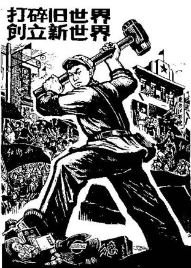

Tài liệu gốc: http://dajiyuan.com/gb/4/11/25/n727814.htm
|
 |
Người Trung quốc rất trọng Đạo. Thời xưa một hoàng đế hung bạo sẽ bị gọi là hôn quân vô đạo. Một hành vi không phù hợp với tiêu chuẩn đạo đức thì sẽ bị xem là không còn đạo lý. Cả khi các nông dân nổi dậy, họ cũng giương cao khẩu hiệu là họ thế thiên hành đạo. Lão Tử [1] nói, “Có một cái gì huyền viên, hoàn mãn, mà hiện hữu trước lúc khai thiên lập địa. Nó là vô thinh, vô hình, viên mãn và bất biến. Nó tồn tại vĩnh hằng ở khắp mọi nơi một cách toàn mãn, và từ nó mọi vật được sinh ra. Tôi không biết tên nó là gì. Tôi gọi nó là Đạo.” Điều đó gợi ý rằng thế giới được hình thành từ ‘Đạo’.
Nhưng trong một trăm năm vừa qua, sự xâm lăng thình lình bởi con quỷ Cộng Sản đã tạo nên một thế lực phản thiên nhiên và phản nhân loại, khiến tạo ra những nỗi thống khổ, điêu linh không thể tưởng tượng nổi và đã đẩy nền văn minh nhân loại đến bên bờ hủy diệt. Cái bạo lực của nó, mà đã tách lìa khỏi cái Đạo, là nghịch với thế giới và là một lực vô cùng tà ác nghịch với thiên nhiên.
“Người mang hình của đất, đất mang hình của trời. Trời mang hình của Đạo, và Đạo mang hình của cái bản chất của chính nó.” [2] Tại Trung quốc thời xưa, người ta tin nơi sự thuận thảo, hài hòa và đồng hiện hữu với thiên nhiên. Nhân loại hòa điệu với thiên nhiên và tin tưởng nơi thiên nhiên. Cái Đạo của vũ trụ không thay đổi. Vũ trụ xoay chuyển thuận theo Đạo một cách có trật tự. Đất thuận theo những biến chuyển của thiên nhiên, vì vậy có bốn mùa. Thuận theo trật tự của vũ trụ và quả đất, nhân loại sẽ được hưởng một đời sống hài hòa trong ân phước. Đó là lý do vì sao người Trung quốc quan trọng vấn đề ‘thiên thời, địa lợi và nhân hòa.’ [3] Đối với họ, mọi điều — thiên văn, địa lý, sự tuần hoàn của vủ trụ, y học, văn chương, và cả những cấu trúc xã hội — đều đi theo quan niệm đó.
Nhưng điều mà Đảng Cộng sản tuyên dương là “nhân định thắng thiên” và lấy triết lý với “đấu tranh giai cấp” làm trung tâm cuộc chiến. Họ thách thức cái tự nhiên của trời đất. Mao Trạch Đông nói, “Hưởng đến tận cùng cái trận đấu chống trời, hưởng đến tận cùng cái trận đấu chống đất, và hưởng đến tận cùng cái trận đấu chống nhân loại.” Có lẻ Đảng Cộng sản đã hưởng những trận đấu nầy, nhưng dân chúng thì đau khổ vô cùng từ những cuộc tranh đấu đó.
******************
Một con người cần phải sống trước tiên thuận theo thiên nhiên và sau đó thuận theo xã hội. “Người ta sinh ra có bản tính là Thiện” [4] và “Thiện là chung cho mọi người” [3] là trong số những bản tính hướng thượng mà con người mang theo khi sanh ra đời, là những lộ trình giúp họ phân biệt được đúng và sai. Trái lại, ĐCS tin rằng con người giống như con thú hoặc thậm chí như máy móc. Giai cấp tư sản và giai cấp vô sản chỉ là những lực lượng tạo thành bằng vật chất.
Marx nói, “Các thế lực vật chất chỉ có thể lật đổ bằng thế lực vật chất.” Y tin rằng lịch sử của toàn nhân loại không gì khác hơn là tiến trình liên tục của bản chất nhân loại, và bản chất nhân loại nầy sự thật là bản chất giai cấp. Y tin rằng không có gì là sơ sanh và tất cả đều là kết quả của môi trường. Marx nghĩ rằng nhân loại trong mọi trường hợp là ‘con người mang tính chất của xã hội’ và không đồng ý với ‘con người mang tính chất từ thiên nhiên’ là quan niệm đề ra bởi Feuerbach.
Marx nói, “Lý thuyết cũng trở thành một thế lực vật chất khi nó được đám đông hưởng ứng.” [5] Lenin tin rằng lý thuyết Marxism không thể được hình thành một cách tự nhiên trong giới vô sản, nhưng phải được nhồi nhét vào trong họ. Lenin cố hết sức nhưng vẫn không thể tạo cho các công nhân chuyển từ đấu tranh kinh tế sang đấu tranh chính trị là điều trực tiếp nhắm vào chiếm thế lực. Vì vậy, y gắn liền hy vọng của y vào ‘lý thuyết Phản ứng theo Điều kiện’ do Ivan Petrovich Pavlov, người thắng giải Nobel đưa ra. Lenin nói rằng cái lý thuyết nầy ‘có một ý nghĩa quan trọng đối với giới vô sản trên khắp thế giới.’ Trotsky [6] còn hy vọng một cách hảo huyền rằng ‘lý thuyết Phản ứng theo Điều kiện’ sẽ không những thay đổi con người trong tâm lý, mà còn thay đổi con người cả về mặt cơ thể vật chất, cũng như cách một con chó chảy nước miếng mỗi khi nghe tiếng chuông gọi bữa ăn trưa reo lên. Y tin tường rằng người lính khi nghe tiếng súng nổ sẽ thay đổi, hành động sẽ can đảm hơn và hy sinh mạng sống của họ cho ĐCS.
Từ thời cổ, con người ta tin rằng sự đền bù là đến từ những cố gắng lớn lao. Qua sự làm lụng vất vả người ta đạt được một đời sống sung túc. Những người lười biếng và muốn gặt lợi mà không làm việc là thiếu đạo đức. Cộng sản lan tràn khắp Trung quốc như một bệnh dịch, và, dưới sự khuyến khích của ĐCSTQ những băng đảng xã hội và những kẻ biếng lười đi chia đất, cướp tài sản tư nhân và bức bách dân chúng. Điều nầy được làm một cách công khai và với danh nghĩa của pháp luật.
Mọi người đều biết kính trọng người già và chăm sóc cho trẻ là điều tốt; không kính trọng người già và thầy giáo là xấu. Sự giáo dục cổ xưa theo Khổng tử có hai phần: Tiểu học và Đại học. Tiểu học được tiếp nhận trước khi đến 15 tuổi và tập trung phần nhiều về văn hóa, sức khỏe công cộng, hành vi và lời nói nơi xã hội. Giáo dục Đại học nhấn mạnh về sự tự chủ và thâu thập kiến thức. Trong những chiến dịch của ĐCSTQ những giáo lý của Lin Biao [7] và Khổng tử bị chỉ trích, và Đảng xóa bỏ tất cả những giáo lý về đề cao đạo đức trong sự giáo dục cống hiến cho thế hệ trẻ.
Một lời xưa nói rằng, ‘Một ngày là thầy, trọn đời là cha’.
Ngày 5 tháng 8 năm 1966, Bian Zhongyun, một cô giáo Trung học tại Đại học Nữ Sư phạm Bắc Kinh, bị các nữ sinh viên bắt đi xuống đường đội mũ lừa, mặc đồ đầy mực đen, và đánh trống trên một cái thùng rác. Cô bị buộc mang trước ngực một tấm bảng đen nặng nề, và bị buộc quỳ gối, và bị đổ nước nóng và bị bỏng cả người rồi bị đánh đến chết và bị tra tấn bằng cách dùng kim đâm vào đầu những móng tay của cô ta.
Một nữ viện trưởng trường Trung học Đại học Bắc kinh bị học sinh buộc đánh trên một cái thùng bể và la lớn lên ‘Tôi là một thành phần xấu’. Tóc cô ta bị cắt xén để bêu xấu cô ta, và đầu cô bị đánh đến máu phun ra khi cô bò trên mặt đất.
Ai cũng nghĩ sạch là tốt, dơ là xấu. Nhưng ĐCSTQ lại tuyên dương ‘thân đầy bùn đất và tay đầy vết chai vì làm việc nặng nhọc’. Đảng nghĩ rằng chư vị là tốt khi ‘tay đen đúa và chân dính đầy phân bò.’ Họ nghĩ những người như vậy là có tiêu chuẩn đạo đức cao nhất, phải được đi vào đại học, trở nên Đảng viên, được thăng chức và có thể trở thành những người cộng sản thừa kế chân chánh của ĐCSTQ.
Nhân loại được tiến bộ nhờ thâu thập sự hiểu biết, nhưng, dưới chế độ Cộng sản, đạt được kiến thức là bị xem là xấu. Những người trí thức bị xếp vào loại dơ bẩn thứ chín – trên bậc thang từ một đến chín. Trí thức được nói rằng phải học từ nơi những người mù chữ, và cần phải bị giáo dục lại bỡi những nông dân nghèo trước khi họ có thể bắt đầu một đời sống mới. Để tiến hành sự tái giáo dục những người trí thức, các giảng viên từ Đại học Tsinghua bị đuổi đi đến Đảo Carp tại Nanchang, tỉnh Jiangxi. Bệnh nhiễm trùng Schistosomiasis [8] là rất thông thường nơi vùng đất nầy, và cả một trại lao động trước đây ở nơi nầy phải dời đi. Các giảng viên bị nhiễm trùng khi họ đụng vào nước sông và bị bệnh ung thư gan, như vậy mất đi khả năng làm việc và khả năng sống của họ.
Dưới sự thúc đẩy của cựu Thủ tướng Trung quốc Châu ân Lai, Đảng Cộng sản Cao miên (Khờ me đỏ) tận diệt hoàn toàn các nhà trí thức. Những người mà bị xem là có tư tưởng độc lập là phải bị cải tạo cả tinh thần lẫn vật chất. Từ 1975 đến 1978, một phần tư dân chúng Cao miên bị giết chết. Có người bị giết chết chỉ vì họ có dấu mang mắt kiếng trên mặt họ.
Sau chiến thắng của Cộng sản Cao miên năm 1975, Pol Pot bắt đầu thành lập xã hội chủ nghĩa – “một thiên đàng cho xã hội nhân loại”— tuyên dương một xã hội không có giai cấp, không có cách biệt giữa thành thị và nông thôn, không tiền tệ hoặc thương mãi. Cuối cùng, cấu trúc gia đình bị xé nát và thay thế bằng những đội lao động nam và đội lao động nữ. Tất cả họ đều bị buộc làm việc và ăn chung, và mặc cùng bộ đồ đồng phục đen cách mạng hoặc quân đội. Chồng vợ chỉ được gặp nhau một lần một tuần khi có sự chấp thuận.
Đảng cộng sản tuyên bố không sợ trời và đất. Nó hy vọng hão huyền sẽ cải tạo trời và đất và hoàn toàn thách thức các nhân tố và lực lượng chân chánh trong vũ trụ. Mao trạch Đông viết trong khi còn là sinh viên tại Hồ Nam:
“Trong lịch sữ, tất cả các quốc gia đều có những cuộc cách mạng lớn lao. Bằng cách giặt đồ củ và nhuộm chúng bằng màu mới, họ đã mang đến những sự thay đổi lớn lao về sự sống và chết. Cũng như vậy đối với sự tiêu hủy của vũ trụ. Sự tiêu hủy của vũ trụ nhất thiết không phải là sự tiêu hủy cùng tận, và sự tiêu hủy ở nơi nầy sẽ là sự sản sanh ở nơi khác. Chúng ta tất cả đều chờ đợi sự tiêu hủy của vũ trụ, vì trong sự tiêu hủy của vũ trụ cũ chúng ta sẽ đạt được cái vũ trụ mới. Phải chăng điều đó tốt hơn là cái vũ trụ cũ?!”
Thân tình là một tình cảm tự nhiên giữa vợ chồng, con cái, cha mẹ và bạn bè. Phát triển những liên hệ nầy là điều tự nhiên trong xã hội nhân loại. Qua những chiến dịch chính trị liên tiếp, ĐCSTQ đã thay đổi con người thành chó sói, hoặc cả thành một con vật còn dữ dằn và ác độc hơn. Có một câu ngụ ngôn rằng, ‘Cọp dữ không ăn thịt con, cho dù chúng ác dữ.’ Nhưng dưới sự cai trị của ĐCSTQ, cha mẹ con cái vợ chồng tố cáo lẫn nhau là điều rất thông thường, vì họ hoàn toàn từ bỏ những mối liên hệ gia đình.
Trong một trường tiểu học tại Bắc kinh vào giữa năm 1960, một nữ giáo viên vô tình viết hai chữ ‘xã hội chủ nghĩa’ và ‘rớt xuống’ bên nhau khi cô ta chuẩn bị một bài thi văn phạm cho học sinh cô. Học sinh báo cáo cho các viên chức ĐCSTQ về hành động nầy, nó đưa đến cô bị kiểm thảo và tố cáo. Các nam học sinh tát vào mặt cô trong những phiên họp công cộng mỗi ngày. Con gái cô từ bỏ liên hệ với cô. Mỗi khi có điều gì xãy ra, con gái cô tố cáo ‘tình trạng tranh đấu giai cấp mới’ của mẹ mình trong những buổi họp lớp. Trong nhiều năm tiếp theo cuộc bất hạnh nầy, công việc của vị giáo viên nầy chỉ là lau chùi nhà trường và cầu tiêu mỗi ngày.
Những ai đã từng trải qua cuộc Cách mạng Văn hóa đã không bao giờ quên cô Zhang Zhixin, một người bị gửi đi tù vì cô đã nói lên sự thật và chỉ trích Mao cho sự thất bại của y trong Chiến dịch Nhảy vọt. Cảnh sát nhà tù nhiều lần cởi hết y phục của cô, còng tay cô ra sau và thảy vào phòng giam nam để cho cô bị họ hãm hiếp cho đến khi cô trở nên điên loạn. Nhà tù sợ rằng cô sẽ kêu lên những khẩu hiệu khi cô bị hành hình. Họ đè đầu cô dưới một cục gạch và cắt lưỡi cô mà không thuốc tê gì cả.
Cả trong những năm gần đây với cuộc khủng bố Pháp luân Công, ĐCSTQ đã dùng đến những sách lược cũ như vậy để kích thích lòng hận thù và tiến tới bạo lực.
ĐCS tiêu hủy bản chất đạo đức của nhân loại, và thúc dục, a tòng và xử dụng khía cạnh tà ác của nhân loại để tăng cường sự cai trị của nó. Chiến dịch nầy kế tiếp chiến dịch kia, những người có lương tâm đã bị buộc giữ im lặng vì sợ bạo lực. Hệ thống Cộng sản đã tận cùng tiêu diệt tiêu chuẩn đạo đức của vũ trụ và tận cùng đè bẹp quan niệm của tốt và xấu, danh dự và nhục nhã mà đã duy trì nhân loại hằng bao nhiêu ngàn năm.
Lão Tử nói:
“Toàn thế giới biết được cái đẹp vì có sự hiện hữu của cái xấu; biết được cái thiện vì có sự hiện hữu của cái bất thiện. Đó là vì sao cái hữu và cái vô tương sanh, khó và dễ đưa đến nhau, dài và ngắn phản ảnh nhau, cao và thấp hướng về nhau, tiếng nói và âm thanh hòa cùng nhau, và mặt trước và mặt sau tương hành cùng nhau.”
Nói một cách đơn giản, có luật tương sanh tương khắc nơi thế giới con người. Không chỉ loài người phân chia có người tốt người xấu, nhưng tốt và xấu có hiện hữu trong cùng một con người.
Dao Zhi, một thần tượng của bọn cướp tại Trung quốc thời xưa, nói với những kẻ đi theo y, ‘Ăn cướp cũng phải có Đạo.” Y tiếp tục diễn thuyết rằng một tướng cướp cũng phải là ‘có danh dự, dũng cãm, công bằng, khôn ngoan và thiện tâm.’ Đó có nghĩa rằng cả một tên cướp cũng không thể vô đạo. Y cũng phải đi theo một số luật lệ.
Nhìn lại lịch sử của Đảng Cộng sản Trung quốc, chúng ta có thể nói rằng nó đầy những mưu mô và lừa bịp, không một ai còn muốn đi theo một luật lệ nào cả. Ví dụ, điều mà các tên cướp tôn trọng nhất là ‘công bằng’. Cả nơi mà chúng chia nhau cướp phẩm cũng được gọi là ‘Chánh phòng chia cướp phẩm’. Nhưng giữa các đồng chí trong Đảng Cộng sản Trung quốc, mỗi khi có một cuộc khủng hoảng xuất hiện, thì họ tố cáo và buộc tội lẫn nhau, và cả đi chế tạo những điều để buộc tội cho nhau.
Lấy ví dụ Tướng lãnh Peng Dehuai [9]. Mao trạch Đông, trước kia làm nông trại, dĩ nhiên biết rõ rằng không thể nào sản xuất ra 130,000 đấu gạo cho mỗi mẫu đất và điều mà Peng nói hoàn toàn là sự thật. Ông ta cũng biết rằng Peng không có ý định cướp lấy quyền hành của ông ta, nói chi đến sự kiện Peng đã cứu mạng ông ta nhiều lần khi Peng đánh nhau với 200,000 quân lính tại Hu Zongnan với chỉ có 20,000 quân về phía ông ta trong lúc chiến tranh Cộng sản-Quốc Dân Đảng. Nhưng khi Peng vừa phát biểu sự bất đồng ý kiến của y với Mao, Mao, phát nổi giận, liệng ngay vào thùng rác bài thơ ông ta viết để ca ngợi Peng—“Ai dám cưỡi trên lưng ngựa và đứng lên nơi sa trường với một thanh bảo kiếm - chỉ có Tướng Peng của chúng ta. Mao cương quyết giết chết Peng, cho dù cái danh tiếng của Peng là bạn đồng chí cứu mạng ông ta.
ĐCSTQ thà giết hại một cách tàn độc hơn là cai trị với chánh sách thiện lành ; nó khủng bố chính thành viên của nó và đi vào sự cấu xé lẫn nhau bất kể là đồng chí và trung thành cá nhân ; nó cho trưng thu đất đai của Trung quốc, hành động xấu xa như một kẻ hèn ; nó biến nó thành kẻ thù của chánh tín và đức tin, khôn ngoan và trí tuệ; nó phát động không ngừng những phong trào nhân dân, là điều trái nghịch với đường lối của thánh nhân cai trị đất nước. Hơn nữa, ĐCSTQ đi xa đến độ buông bỏ sự yêu cầu căn bản là ‘cả tướng cướp cũng phải tuân theo Đạo’.
Sự tà ác của nó đã đi vượt quá luật tương sanh tương khắc trong vũ trụ. ĐCSTQ hoàn toàn nghịch chống với thiên nhiên và nhân loại vì mục đích đảo lộn tiêu chuẩn thiện và ác và làm loạn luật của vũ trụ. Sự hách dịch vô độ của nó đã tới đỉnh điểm, và nó bắt buộc phải đi đến một sự ngã đổ hoàn toàn.
******************
Jin Xunhua, một tốt nghiệp viên cao học năm 1968 từ trường Trung học Wusong số 2 của Thượng Hải và là một thành viên của Hội đồng Vệ binh đỏ Trung học Thượng hải , bị đưa xuống nông thôn tại tĩnh Hắc long giang tháng ba 1969 để nhận một sự tái giáo hóa. Ngày 15 tháng 8, 1969, trong một trận lụt lớn, nước mạnh mẻ chảy tràn từ một quả núi và không bao lâu ngập các vùng quanh Sông Shuang. Jin nhảy vào trong giòng nước lũ để kéo lên hai cuộn giây thép cho nhóm sản xuất của ông ta và đã bị chết chìm.
Sau đây là hai bài trong tập nhật ký của Jin viết trước khi ông ta bị chết.
Ngày 4 tháng Bảy
Tôi bắt đầu cảm thấy sự nghiêm trọng và cường độ của đấu tranh giai cấp nơi nông thôn. Là một vệ binh đỏ của lãnh tụ Mao, tôi đã chuẩn bị sẳn sàng để chiến đấu, húc vào những thế lực phản động với Tư tưởng vô địch của Mao trạch Đông làm khí giới của tôi. Tôi rất muốn làm điều đó cả nếu điều đó có nghĩa là tôi phải hy sinh mạng sống của tôi. Tôi sẽ chiến đấu, chiến đấu, và chiến đấu với tòan khả năng của tôi để củng cố chế độ độc tài vô sản.
Ngày 19 tháng Bảy
Những kẻ thù giai cấp trong đội sản xuất nầy vẫn còn hống hách. Giới trẻ trí thức đến nông thôn chính là để tham gia vào ba phong trào cách mạng chánh nơi nông thôn, quan trọng nhất là đấu tranh giai cấp. Chúng tôi phải nương dựa vào các nông dân giai cấp nghèo và giai cấp trung thấp, kích thích, thúc đẩy quần chúng và tiêu trừ sự hống hách của kẻ địch. Chúng tôi giới trẻ trí thức phải luôn nâng cao phù hiệu lớn lao của Tư tưởng Mao trạch Đông, không bao giờ quên về đấu tranh giai cấp, và không bao giờ quên về độc tài vô sản.
Jin đến nông thôn với tư tưởng chiến đấu với trời và đất và cải tạo nhân loại. Quyển nhật ký của anh ta cho thấy rằng tư tưởng của anh ta đầy những ‘chiến đấu’. Anh ta đi từ cái ý tưởng ‘tranh đấu với con người’ đến thách thức với trời đất, và sau cùng mất mạng vì điều đó. Jin là một trường hợp điển hình của lý thuyết đấu tranh và, đồng thời, trở nên nạn nhân của nó.
Engels có một lần nói rằng tự do là một phản ảnh của những điều điều đương nhiên, không thể tránh được. Mao trạch Đông còn tiếp theo, “và là một cải cách của thế giới.” Điểm cuối cùng nầy phô bày ra ánh sáng hoàn toàn cái quan niệm của ĐCSTQ về thiên nhiên, tức là, thay đổi thiên nhiên. Cái ‘lẻ đương nhiên’ mà theo Cộng sản hiểu là một vấn đề ngoài tầm mắt của họ và cái ‘kiểu mẫu’ mà nguồn gốc là vượt quá sự giải thích của họ. Họ tin rằng thiên nhiên và nhân loại có thể ‘chinh phục’ bằng cách điều động khả năng chủ quan để hiểu những định luật đó một cách khách quan. Cộng sản đã làm rối loạn cả Nga sô và Trung quốc, là hai nơi thí nghiệm của họ, trong cố gắng của họ để thay đổi thiên nhiên.
Các ca khúc trong quần chúng trong thời đại 'những bước nhảy vọt’ cho thấy cái hống hách và ngu xuẩn của ĐCSTQ: “Hãy làm cho núi phải cúi đầu và sông phải đứng qua một bên’ ; “Không có Ngọc hoàng Thượng đế trên trời và không có Long vương dưới đất. Tôi là Ngọc Hoàng Thượng đế và tôi là Long vương. Tôi ra lệnh cho ba núi và năm sông phải đứng qua một bên, và tôi đến đây nầy!’
Đảng Cộng sản đã đến ! Cùng đến với chúng là sự tiêu hủy của thế giới nguyên lai là hài hòa và sự cắt đứt quân bình của thiên nhiên.
Dưới chánh sách nông nghiệp là giữ cho hột lúa là cái mấu chốt của tất cả các chương trình, ĐCSTQ, không một chút nương tay, đã cố biến những vùng đất rộng lớn đồi núi cỏ xanh thành đất trồng trọt, cày cấy và lấp bằng các sông hồ Trung quốc để làm đất trồng trọt. Kết quả là sao? ĐCSTQ đã tuyên bố rằng mức sản xuất lúa gạo năm 1952 trội hơn thời Quốc gia, nhưng điều mà ĐCSTQ không tiết lộ, là mãi cho đến 1972 toàn mức sản xuất lúa gạo tại Trung quốc vượt hơn thời thái bình thịnh trị của Càn Long nhà Thanh. Cả cho đến hôm nay, mức sản xuất lúa gạo trung bình của Trung quốc tính theo đầu người vẫn còn dưới mức xa của thời nhà Thanh. Nó chỉ là một phần ba của thời nhà Tống, là thời mà mức sản xuất nông nghiệp là ở tột đỉnh trong lịch sử Trung quốc.
Chặt cây và lấp sông hồ một cách tùy tiện đương nhiên đã tạo nên sự tuột dốc trầm trọng của môi trường tại Trung quốc. Ngày nay, hệ thống môi sinh của Trung quốc là trên bờ sụp đổ. Sự làm khô ráo con sông Huai và sông Hoàng Hà và sự ô nhiễm của Sông Huai và Sông Dương tử đã cắt đứt nguồn sống thiên nhiên mà đất nước Trung quốc đã lệ thuộc vào cho sự sống còn của nó. Với sự biến mất của đồng cỏ tại Gansu, Qinghai, Inner Mongolia, và Xinjiang, những đám cát đã lần bước chân vào lục địa.
Vào những năm 1950, dưới sự hướng dẫn của những chuyên gia Nga sô, ĐCSTQ đã xây dựng nên đập thủy điện Sanmenxia trên con sông Hoàng Hà. Mãi cho đến ngày nay, đập nước nầy có một năng xuất chỉ vào mức một con sông trung bình, mặc dù sự kiện Hoàng Hà là một con sông rộng lớn bực nhì trên toàn Trung quốc. Để khiến cho sự việc càng thêm tệ hơn, đồ án nầy đã tạo nên một sự ứ đọng bùn cát nơi bờ thượng nguồn của nó và làm cho mực nước dâng lên cao so với trữ lượng của lòng sông. Vì lý do đó, khi có một trận lụt nhẹ thôi cũng đũ gây thiệt hại lớn lao về sinh mệnh và tài sản cho dân chúng ở đôi bờ sông. Trong trận lụt 2003 của con sông Wei, mực nước chảy cao nhất là 3700 mét khối mỗi giây, là điều có thể xảy ra mỗi 3 đến 5 năm, nhưng tai họa nó gây nên là chưa từng thấy trên 50 năm qua.
Có một số lớn hồ chứa nước cở lớn đã được xây cất tại quận lỵ Zhumadian, tĩnh Hồ Nam. Trong năm 1975, những cái đập của các hồ chứa nước đó đã bị xập liên tiếp. Trong một thời gian không lâu hơn hai giờ đồng hồ, 60,000 người dân bị chết đuối, với một tổng số người chết lên cao đến 200,000.
Những hành động bạo ngược của ĐCSTQ trên đất nước Trung quốc là cần được lưu ý. Cái đập nước trên Sông Dương tử và chương trình chuyển nước từ miền Nam lên miền Bắc là những điều mà ĐCSTQ cố tình làm để thay đổi hệ thống môi sinh thiên nhiên bằng những số tiền đầu tư lên đến hằng trăm tỷ đô-la Mỹ. Đó là chưa kể những chương trình nhỏ và bực trung để ‘chiến đấu với đất’. Hơn nữa, trong nội bộ ĐCSTQ đã có lần đưa ra đề nghị dùng một quả bom nguyên tử để là nổ tung một con đường trên đồi Qinghai-Tibet Plateau để thay đổi môi trường thiên nhiên tại miền Tây Trung quốc. Cho dù ĐCSTQ khinh thường đất đai của nó và sự hống hách của nó làm rúng động thế giới, chúng không phải là ngẫu nhiên.
Trong Bát Quái của Kinh Dịch, tổ tiên Trung quốc đã xem trời là Càn hoặc Tạo hóa, và kính trọng Đạo trời. Họ xem đất là Khôn hoặc mẹ, và kính trọng Đức sanh sản.
Khôn tiếp theo Càn được giải thích trong Kinh dịch như thế nầy: Nằm trong Bát quái của Khôn, bản chất của đất là nới rộng và tiếp thâu hay có thể co và giãn. Đáp ứng với điều nầy, bực thượng sĩ hành động và tiếp đón mọi việc với một đức độ vô lượng.
Các ghi chú của Khổng giáo về Kinh Dịch có nói rằng, ‘Đức của Khôn là tuyệt hảo ; nó sanh sản ra muôn loài.”
Khổng Tử bàn thêm về bản chất của Khôn, “Khôn là mềm nhất, nhưng khi vận động nó rất cứng. Nó là tĩnh nhất, nhưng trong thiên nhiên, nó là vuông. Vì thuận theo mà nó đạt được chúa của nó, nhưng vẫn giữ được bản chất của nó, và như vậy nó là nhẫn. Nó chứa đựng vạn vật, và rạng rỡ trong sự biến đổi. Đó là cách của Khôn – hiền đức biết bao, nó mang được trời và chuyển động với thời gian.’ Rỏ ràng, trên địa cầu này, đất là mẹ, là những đức tánh của nhẹ nhàng, êm ái và nhẫn đi theo trời, mọi sự mới có thể sống còn và phát triển trên quả đất. Kinh Dịch dạy chúng ta hành động đúng đắn đối với đạo trời và đức của đất, yêu cầu chúng ta đi theo trời, thuận theo đất và tôn trọng thiên nhiên.
Nhưng ĐCSTQ đã vi phạm đến Càn và Khôn, dạy ‘đánh với trời và đấu với đất’. Nó đã đâm chết những tài nguyên của đất một cách tùy tiện. Cuối cùng, nó sẽ không tránh khỏi bị trời, đất và luật thiên nhiên phạt.
******************
Con trai của Einstein, Edward, có một lần hỏi ông ta vì sao ông ta nổi danh như vậy. Einstein đã trả lời, chỉ vào một con bọ đui trên một quả banh da là nó không biết con đường nó bò đi là cong, nhưng ‘Einstein biết’. Câu trả lời của Einstein quả thật có hàm nghĩa sâu xa. Một tục ngữ Trung quốc cũng có một ý nghĩa tương tự, ‘Anh không biết cái mặt thật của Lu Sơn chính là vì anh đang ở trên núi đó’. Để hiểu một hệ thống, con người cần phải bước ra khỏi hệ thống đó để quan sát nó. Vậy với những quan niệm hạn hẹp, nhân loại sẽ không bao giờ có thể hiểu được bản chất thật của không gian và thời gian vô biên trong vũ trụ, và như vậy vũ trụ sẽ mãi mãi là một bí mật cho nhân loại.
Cái thế giới mà khoa học không thể vượt qua được là thuộc về huyền bí học hoặc tư tưởng học, thế giới của đức ‘tin’. Đức tin, một hoạt động của tinh thần, nó có liên hệ với kinh nghiệm và sự hiểu biết về sinh mạng, thời-không và vũ trụ, nó nằm vượt quá điều mà một đảng chánh trị có thể điều khiển. “Hãy trã lại cho Caesar những gì của Caesar, và cho Thượng đế những gì của Thượng đế.’ [12] Tuy nhiên, dựa trên sự hiểu biết đáng thương và ngu xuẩn về vủ trụ và sinh mệnh của nó, ĐCSTQ đã gọi mọi điều mà vượt quá lý thuyết của nó là ‘mê tín’, và bắt buộc những người tin nơi Thượng đế vào chính sách tẩy não và chuyển hóa của nó. Những ai không chịu thay đổi đức tin của họ đã bị nhục mạ và cả giết chết.
Các khoa học gia chân chính đều giữ một cái nhìn rất rộng rãi về vũ trụ, và họ sẽ không từ chối những cái ‘bất biết’ vô tận do những quan niệm có hạn của chính họ. Nhà khoa học gia nổi tiếng Newton, trong quyển sách của ông ‘Các nguyên lý của toán học’ ấn hành năm 1678, đã giải thích rất chi tiết những nguyên lý của máy móc, sự hình thành sóng nước, thủy triều, và sự vận động của các hành tinh, và tính ra sự vận hành của thái dương hệ. Newton, là người được dân chúng công nhận là bậc toàn tài như vậy, lại luôn nhắc rằng quyển sách nầy của ông chỉ là một sự mô tả về hình thức bề mặt của hiện tượng, và ông hoàn toàn không dám nói gì về cái ý nghĩa thật của Thượng đế tối cao trong việc sáng tạo ra vũ trụ. Trong kỳ ấn hành lần thứ nhì quyển ‘Các nguyên lý của Toán học’, để trình bày đức tin của ông, Newton viết, “Cái hệ thống tối tuyệt đẹp nầy với một thái dương, các hành tinh, và các ngôi sao chỉ có thể là thừa hành từ sự chỉ bảo và điều khiển của một bậc đại trí uy lực… Như một con người đui mù không nhận thức được các màu sắc, cũng như vậy chúng ta không thể hiểu nỗi về cách mà Thượng đế tối đại trí nhìn và hiểu mọi điều.”
Chúng ta hãy để qua một bên những vấn đề có hay không những thế giới thiên đàng mà vượt quá thời-không nầy và có hay không những người tầm đạo có thể trở về nguyên lai và bản tánh của họ. Một điều mà tất cả chúng ta có thể đồng ý là : Những người có chánh tín tất cả đều tin rằng thiện có thiện báo và ác có ác báo. Chánh tín giữ một vai trò rất quan trọng trong việc duy trì đạo đức nhân loại ở một trình độ nào đó. Từ Aristotle đến Einstein, đã có đức tin nơi sự hiện hữu của một luật tối thượng trong vũ trụ. Nhân loại không bao giờ ngừng chứng minh về chân lý của vũ trụ qua các phương tiện khác nhau. Ngoài khoa học ra, tại sao tôn giáo, đức tin và tu luyện không thể được chấp nhận như là những cách thức khác để vén bức màn sự thật của vũ trụ?
Tất cả các quốc gia nguyên thủy đều tin nơi thượng đế. Chính nhờ vào đức tin nơi Thượng đế và nhân quả của thiện ác, mà nhân loại có thể tự kềm chế và giữ vững đạo đức trong xã hội. Trong mọi thời gian và trên khắp thế giới, các tôn giáo chân chánh tại Tây phương, và Khổng giáo, Phật giáo và Lão giáo tại Đông phương tất cả đều đã dạy con người ta rằng chân hạnh phúc đến từ đức tin nơi thượng đế, thờ phượng trời, tốt đối với mọi người, quí trọng những gì người ta có, và biết ân những điều được ban phước.
Một tôn chỉ dẫn đạo của CS là vô thần — tin rằng không có Phật, không có Đạo, không có đời trước, đời sau, và không có quả báo. Vì vậy, CS khắp các nước đều dạy giới vô sản nghèo nàn [13] rằng họ không cần tin nơi Thượng đế; họ không cần phải hoàn trả cho những gì họ đã làm; và họ không cần trọng luật trong hành động của họ. Trái lại, họ cần phải dùng mưu kế và bạo lực để đoạt được tài sản.
Trung quốc cổ thời, các hoàng đế, là người được xem như là bực tối cao thượng, vẫn phải đặt mình dưới trời, tự gọi họ là con của trời. Điều khiển và kềm chế bởi ‘ý trời’, họ lâu lâu phát ra những ngự chế để tự khiển trách và hối lỗi với trời. Cộng sản, trái lại, tự xem mình là đại diện cho ý trời. Không bị hạn chế bởi luật lệ gì, họ tự do muốn làm gì thì làm. Kết quả là thay vì một ‘thiên đàng cõi thế’, họ đã tạo ra một địa ngục trần gian.
Marx, ông tổ của Cộng sản, tin rằng tôn giáo là thuốc phiện tinh thần cho người dân. Y rất sợ dân chúng tin nơi Thượng đế và từ chối Cộng sản của y. Ngay chương đầu quyển ‘Biện chứng về thiên nhiên’ của Engels chứa đựng sự chỉ trích các huyền học và vô chứng học.
Engels tuyên bố rằng mọi điều có trong và trước thời Trung Cổ phải chứng minh sự tồn tại của chúng trước lý tính phán xét của nhân loại. Khi y tuyên bố như vậy, y tự xem mình và Marx như là những phán quan trong một cuộc phán xét như vậy. Bakunin, một người phản động và là bạn của Marx, phê bình Marx như thế nầy, “Y tự xem như là Thượng đế đối với dân chúng. Y không chịu được một ai khác là Thượng đế ngoài y ra. Y muốn dân chúng tôn sùng y như họ tôn sùng Thượng đế và thờ phượng y như thần tượng của họ. Nếu không, y sẽ tấn công họ bằng lời và khủng bố họ.
Đức tin truyền thống chân chánh trở nên trở ngại đương nhiên cho sự hống hách của Cộng sản.
ĐCSTQ đã mất tất cả dè dặt trong sự khủng bố rầm rộ các tôn giáo của nó. Trong thời Cách Mạng Văn hóa, nhiều chùa chiền và tháp đạo Hồi bị đập nát và thầy tu bị làm nhục và bắt đi diễn hành qua các đường phố. Tại Tây Tạng, 90 phần trăm các chùa đều bị thiệt hại. Gong Pinmei, một thầy tu công giáo tại Thượng hải, bị ĐCSTQ khủng bố bỡi vì đức tin của ông ta. Ông ta bị bắt giam bởi một chế độ độc tài trong gần nửa thế kỷ, trong thời gian đó hơn 30 năm ông ta bị giam trong phòng giam cá nhân. ĐCSTQ đã hơn một lần buộc ông ta từ bỏ đức tin của ông ta và chấp nhận sự lãnh đạo của ‘Hội đồng Yêu nước tam-tự’ do Đảng Cộng sản lập nên [14] để đổi lấy sự trả tự do của ông. Gong từ chối. Sau khi ông ta được thả ra, ông đi Mỹ sống vào cuối 1980. Khi ông chết vào tuổi 90, ông để lại một chúc thư nói rằng, ‘Hãy mang mộ bia của tôi trở về Thượng hải khi ĐCSTQ không còn cai trị Trung quốc.”
Cả cho đến ngày nay, ĐCSTQ vẫn tiếp tục khủng bố tôn giáo, bắt giam hằng chục ngàn người của nhà thờ Công giáo.
Trong những năm gần đây, sự đàn áp của ĐCSTQ trên những người tu Pháp Luân Công, là những người đang bênh vực nguyên lý Chân Thiện Nhẫn, là một sự nới rộng cái lý thuyết của họ về ‘đấu tranh với trời’, cũng như nó là một kết quả không tránh được buộc người dân đi ngược lại ý muốn của họ.
Những người Cộng sản vô thần tìm lấy niềm vui trong sự đấu tranh với trời và cố đàn áp những người tin nơi Thượng đế. Sự ngu xuẩn của họ không thể nào diễn tả được thành lời ; những chữ như hống hách hoặc ngu xuẩn chỉ có thể nói lên một phần nào của nó mà thôi.
******************
Cộng sản thực tế đã thất bại trên toàn cầu. Giang trạch Dân, cựu lãnh đạo chánh cuối cùng của chế độ Cộng sản trên thế giới, đã phải nói lên như thế nầy với một thông tín viên The Washington Post vào tháng Ba 2002, “Khi tôi còn trẻ tôi tin rằng Cộng sản sẽ không bao lâu chiến thắng tất cả. Bây giờ tôi không còn nghĩ như vậy nữa.” Giờ đây con số những người thật sự tin nơi chế độ Cộng sản là rất hiếm hoi.
Số trời định là phong trào Cộng sản phải thất bại vì nó vi phạm luật vũ trụ và đi ngược lại với đạo trời. Một cái lực nghịch vũ trụ như vậy chắc chắn là sẽ bị phạt bởi ý trời và các đấng thiêng liêng.
Dù ĐCSTQ đã sống sót qua bao nhiêu cơn khủng hoảng bằng cách thay đổi bộ mặt của nó và đeo dính vào công lao cứu mạng cuối cùng, thì sự tàn bại không thể tránh của nó đã quá rõ đối với mọi người. Những cánh áo đẹp trên mình nó rớt dần ra, ĐCSTQ quốc đang phơi bày bản chất thật của nó là tham lam, bạo tàn, hèn mạt, sợ sệt và nghịch với vũ trụ. Cho đến hôm nay, nó vẫn tiếp tục kiểm soát tư tưởng của người dân, bóp méo đạo đức của nhân loại và như vậy mang đến nhiều điêu tàn cho nền đạo đức, hòa bình và tiến bộ của nhân loại.
Vũ trụ bao la mang trong nó cái ý chí không thể từ nan của trời, có thể gọi là ý Thượng đế, hoặc là luật và lực thiên nhiên. Nhân loại sẽ chỉ có được tương lai khi nó biết tôn trọng ý trời, thuận theo giòng sống tự nhiên thiên nhiên, tuân hành theo luật vũ trụ, và yêu thương mọi chúng sanh dưới gầm trời.
Ghi chú:
[1] Lão Tử (còn được biết với cái tên là Lao Tzu, Li Er hoặc Li Dan), triết gia Trung quốc, sống vào thế kỷ thứ 4 trước Tây lịch. Ông ta được xem là tác giả của quyển Đạo Đức Kinh (Tao-Te Ching), quyển sách căn bản của Lão giáo.
[2] Đạo Đức Kinh, mục (chapter) 25.
[3] Sách của Mạnh Tử.
[4] Tam tự kinh (Rhymes of Three) (San Zi Jing), sách giáo khoa tiểu học cỗ truyền Trung quốc.
[5] Karl Marx, “Một đóng góp cho sự phê bình Triết lý cái Đúng của Hegel’ (A Contribution to the Critique of Hegel's Philosophy of Right.”)
[6] Leon Trotsky (1879-1940), lý thuyết gia người Nga về CS, sữ gia, lãnh đạo quân sự, người sáng lập Vệ binh đỏ Nga. Bị ám sát tại thành phố Mexico bỡi tay sai của Stalin, và chết ngày 22 tháng Tám 1940.
[7] Lin Biao (1907-1971), một trong những người lãnh đạo trưởng của ĐCSTQ, phục vụ dưới thời Mao trạch Đông như một thành viên của Văn phòng Chính Trị Trung quốc, như phó chủ tịch (1958) và Bộ trưởng Quốc phòng (1959). Lin được xem như kiến trúc sư của Đại Cách Mạng Văn hóa Trung quốc. Lin được chỉ định như người thừa kế Mao năm 1966 nhưng bị thất sủng năm 1970. Cãm giác được sự thất sủng nầy, Lin nghe nói có liên hệ vào một cuộc đão chính, sau đó cố trốn thóat quan Nga khi cuộc đão chinh bị đỗ bể. Trong lúc chạy trốn, máy bay của y bị rớt xuống Mongolia, và y bị chết.
[8] Schistosomiasis là một căn bệnh từ các (parasitic worms). Sự nhiễm bệnh xãy ra khi có tiếp xúc với nước (fresh water) bị nhiễm trùng. Triệu chứng thông thường bao gồm nóng, ớn lạnh, ho và đau bắp thịt. Trường hợp nặng hơn, bệnh có thể tấn công gan, ruột, phổi và mật, và trong trường hợp hiếm hoi (seizures), tê liệt, hoặc sưng cột xương sống.
[9] Peng Dehuai (1898-1974): tướng lãnh CSTQ và lãnh đạo chính trị. Peng là thống đốc (chief commander) trong trận giặc Cao Ly, phó chủ tịch (vice-premier) Hội đồng Quốc gia, thành viên của Văn phòng Chính trị, và Bộ trưởng quốc phòng từ 1954-1959. Y bị cất chức sau khi bất đồng ý kiến với khuynh hướng thiên tả của Mao tại Lushan Plenum của ĐCSTQ năm 1959.
[10] Lượng (“jin”) là một đơn vị đo lường về sức nặng của Trung quốc. 1 jin = 0.5 kg.
[11] Mẫu (“mu”) là một đơn vị đo lường Trung quốc về diện tích đất đai. 1 mu = 0.165 acres.
[12] Matthew, 22:21.
[13] Vô sản bần cố nông, dịch nôm na là công nhân nghèo đói. Danh từ nầy chỉ định giới xã hội nghèo hèn, yếu kém hoặc thành phần hạ đẳng (class of outcast, degenerate or underground) là cái khối dân chúng tại các trung tâm kỷ nghệ. Nó bao gồm người ăn xin, đỉ điếm, ăn cướp, lừa đão, dối gạt, phạm nhân nhỏ, vô gia cư, thất nghiệp trường kỳ hoặc không thể có việc làm, những người bị kỷ nghệ sa thải, và đũ loại thành phần ngọai giai cấp, (declassed, degraded or degenerated). Từ nầy do Marx đưa ra trong Đấu tranh giai cấp tại Pháp, 1848-1850.
[14] Hội đồng Yêu nước Tam-tự (Three-Self Patriotic Committee) (hoặc Nhà thờ Yêu nước Tam-tự - Three-Self Patriotic Church, TSPC) là một sáng chế của ĐCSTQ. Tam tự (“Three-self”) tức là nói ‘tự điều khiển, tự nuôi sống và tự sanh sản’ . Hội đồng Yêu nước Tam-tự đòi hỏi người Công giáo Trung quốc cắt đứt liên hệ với Công giáo ngoại quốc. Nó kiểm sóat tất cả các nhà thờ chính thức tại Trung quốc. Những nhà thờ nào không gia nhập thì bị buộc đóng cửa. Các lãnh tụ và tín đồ những nhà thờ độc lập bị khủng bố và thường bị kêu án tù.
Copyright © 2004 DAJIYUAN.COM, thời báo Đại Kỷ Nguyên